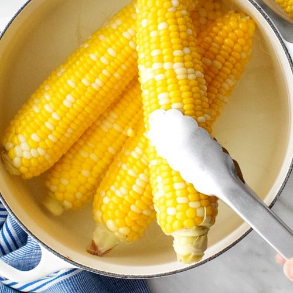

Corn On Cob
\

Description
Corn on the cob is cooked in boiled water with a little sugar and lemon juice for the sweetest, tastiest corn!
Ingredients
- 2 tablespoons white sugar
- 1 tablespoon lemon juice
- 6 ears corn on the cob, husks and silk removed
Steps
- Fill a large pot about 3/4 full of water and bring to a boil. Stir in sugar and lemon juice until sugar is dissolved.
- Gently place ears of corn into boiling water, cover the pot, turn off the heat,
and let corn cook in the hot water until tender, about 10 minutes.